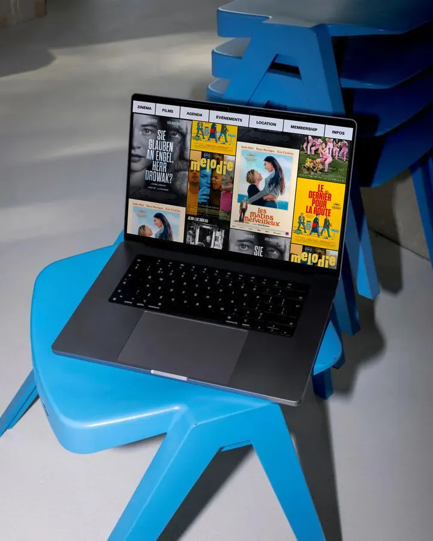

Zinéma
Cinéma d'art et essai, rue du Maupas à Lausanne

Le Zinéma est le premier cinéma d'art et essai miniplex de Lausanne, rue du Maupas. Nous avons conçu et développé son site de bout en bout.
La page d'accueil est pensée comme un mur d'affiches : ce sont les films qui accueillent le visiteur, puis l'agenda des séances et la carte de membre, à portée de clic.
- La problématique
- Un cinéma indépendant vit de sa programmation, qui change chaque semaine. Le site devait la montrer d'un coup d'œil et rester simple à tenir à jour pour l'équipe.
- L'enjeu
- Faire venir du monde en salle : trouver un film, une séance et un horaire en quelques secondes, sur téléphone comme sur ordinateur.
- Notre réponse
- Une grille d'affiches pleine page, une navigation franche en capitales (films, agenda, événements, location, membership) et un agenda qui mène directement à la séance.
- Difficultés et solutions
- Les affiches n'ont jamais le même format. Plutôt que de les rogner, nous avons construit une grille qui les accueille telles qu'elles sont, en les chargeant au fil du défilement pour que la page reste rapide.